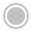

Image Tweaker
Alignment
Auto
Noon
Motion Tweaker
Shuffle
Grid
Vertical
Mosaic
Auto
Free
Square
1:1
IG Portrait
4:5
Reel / TikTok
9:16
YouTube / X Post
16:9
Ln Link Share
1.91:1
LinkedIn Banner
4:1
X Banner
3:1
Morning
Noon
Evening
Night
Resolution
64
Zoom
1.0
Threshold
200
Distribution
1
Cellular Automation
Influence
30
Update Per Sec
20
Foreground
Intensity
0.5
Speed
10
Background
Intensity
0.5
Speed
10